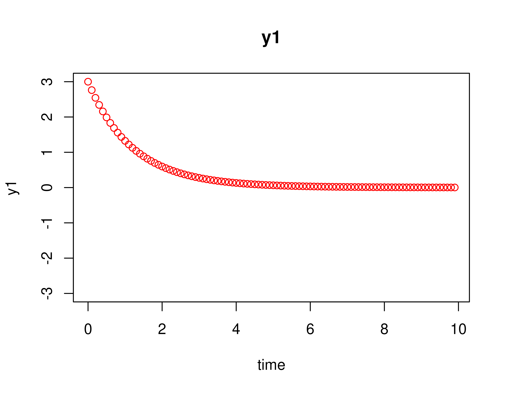
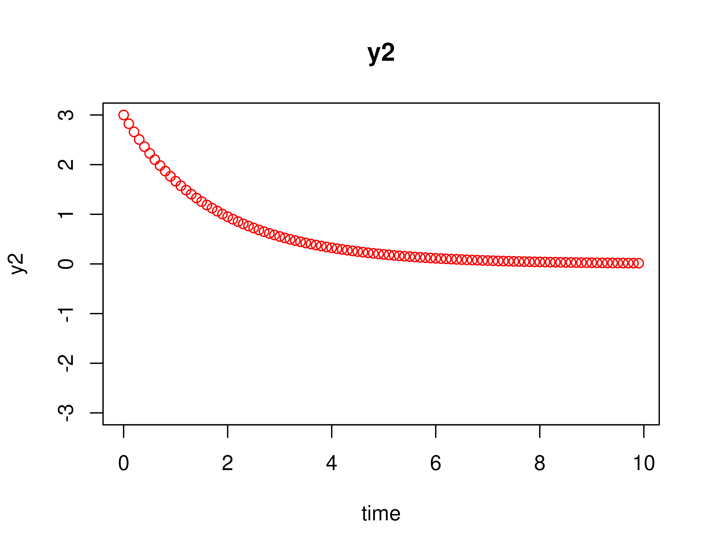
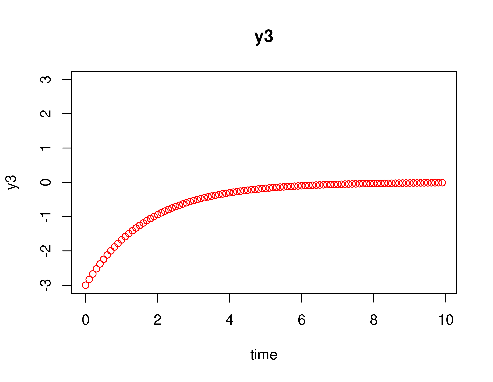
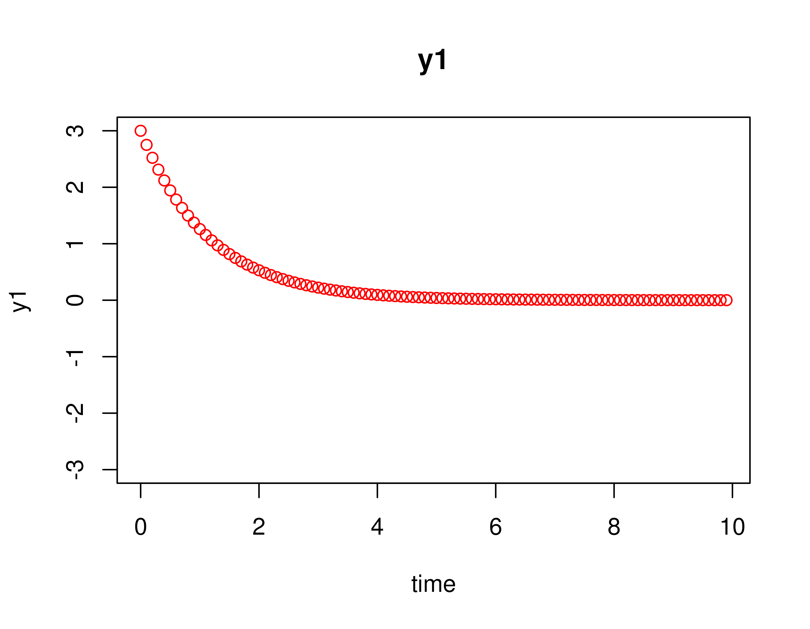
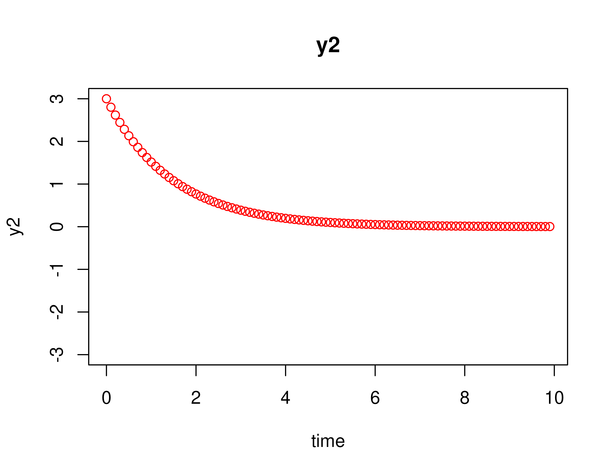
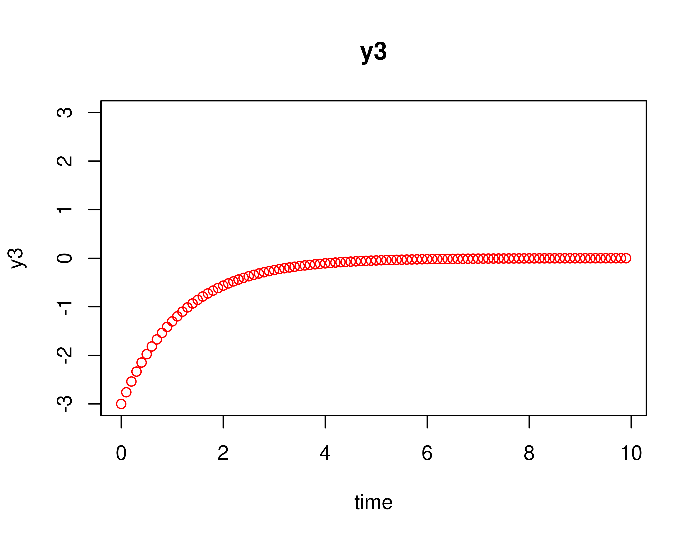
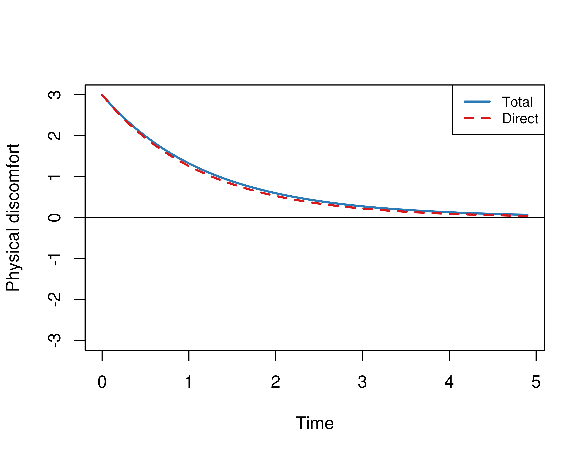
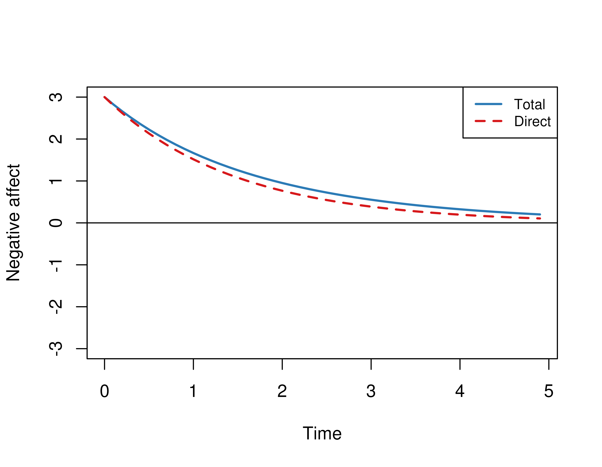
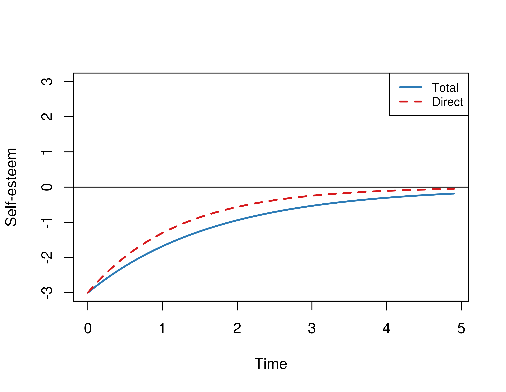

Empirical Example (Plot)
Ivan Jacob Agaloos Pesigan
Source:vignettes/fig-empirical-plot.Rmd
fig-empirical-plot.RmdThis vignette accompanies the Empirical Example. The goal of the
example is to visualize how the variables evolve over time. To aid in
interpretation we removed the measurement error and process noise. We
compared how variables evolve using the estimated drift matrix \(\boldsymbol{\Phi}\) denoted by
phi and the drift matrix where the effects coming from and
to the mediator variable (negative emotion) are set to zero denoted by
phi_direct. This example features the
SimSSMOUFixed function from the simStateSpace
package.
Summary of CT-VAR Estimates
The object fit contains the fitted dynr
model.
summary(fit)
#> Coefficients:
#> Estimate Std. Error t value ci.lower ci.upper Pr(>|t|)
#> phi_11 -0.682289 0.091137 -7.486 -0.860914 -0.503664 <2e-16 ***
#> phi_12 -0.230881 0.100695 -2.293 -0.428240 -0.033523 0.0109 *
#> phi_13 -0.154588 0.057133 -2.706 -0.266567 -0.042609 0.0034 **
#> phi_21 -0.255948 0.104128 -2.458 -0.460035 -0.051861 0.0070 **
#> phi_22 -0.829891 0.118322 -7.014 -1.061797 -0.597985 <2e-16 ***
#> phi_23 0.005405 0.066135 0.082 -0.124218 0.135029 0.4674
#> phi_31 0.041008 0.130473 0.314 -0.214715 0.296730 0.3766
#> phi_32 -0.030100 0.146146 -0.206 -0.316541 0.256340 0.4184
#> phi_33 -0.898237 0.080969 -11.094 -1.056933 -0.739540 <2e-16 ***
#> sigma_11 1.089489 0.070942 15.357 0.950445 1.228533 <2e-16 ***
#> sigma_12 -0.780305 0.065795 -11.860 -0.909261 -0.651349 <2e-16 ***
#> sigma_13 0.482061 0.075104 6.419 0.334859 0.629263 <2e-16 ***
#> sigma_22 1.255423 0.091716 13.688 1.075663 1.435184 <2e-16 ***
#> sigma_23 -0.527300 0.083808 -6.292 -0.691560 -0.363040 <2e-16 ***
#> sigma_33 1.748546 0.138528 12.622 1.477036 2.020056 <2e-16 ***
#> ---
#> Signif. codes: 0 '***' 0.001 '**' 0.01 '*' 0.05 '.' 0.1 ' ' 1
#>
#> -2 log-likelihood value at convergence = 10263.49
#> AIC = 10293.49
#> BIC = 10428.20Extract Elements of the Drift Matrix
We extract the elements of the drift matrix and the corresponding
sampling variance-covariance matrix from the fit
object.
varnames <- c(
"phi_11",
"phi_21",
"phi_31",
"phi_12",
"phi_22",
"phi_32",
"phi_13",
"phi_23",
"phi_33"
)
coef <- summary(fit)$Coefficients
phi_vec <- coef[varnames, "Estimate"]
phi <- matrix(
data = phi_vec,
nrow = 3
)
colnames(phi) <- rownames(phi) <- c(
"Negative affect",
"Self-esteem",
"Physical discomfort"
)
phi
#> Negative affect Self-esteem Physical discomfort
#> Negative affect -0.68228879 -0.23088139 -0.154587872
#> Self-esteem -0.25594788 -0.82989122 0.005405377
#> Physical discomfort 0.04100777 -0.03010042 -0.898236563To simplify interpretation we set non-significant coefficients to zero.
p <- coef[varnames, "Pr(>|t|)"]
phi_vec <- ifelse(test = p < 0.05, yes = phi, no = 0)
phi <- matrix(
data = phi_vec,
nrow = 3
)
colnames(phi) <- rownames(phi) <- c(
"Negative affect",
"Self-esteem",
"Physical discomfort"
)
phiWe rearrange the matrix to reflect the \(X\), \(M\), and \(Y\) arrangement.
phi <- phi[
c("Physical discomfort", "Negative affect", "Self-esteem"),
c("Physical discomfort", "Negative affect", "Self-esteem")
]
phi
#> Physical discomfort Negative affect Self-esteem
#> Physical discomfort -0.898236563 0.04100777 -0.03010042
#> Negative affect -0.154587872 -0.68228879 -0.23088139
#> Self-esteem 0.005405377 -0.25594788 -0.82989122Generate Data Without Measurement Error and Process Noise
Using the Original Drift Matrix (phi)
Using the SimSSMOUFixed function from the
simStateSpace package, we generate data for a single
individual (n = 1) for fifty time points (t = 50) and \(\Delta t\) of 0.10 without measurement
error and process noise. We set the initial condition for \(X\) (physical discomfort) and \(M\) (negative affect) to be high and \(Y\) (self-esteem) to be low.
mu0 <- c(
3,
3,
-3
)
y_phi <- SimSSMOUFixed(
n = 1,
time = 100,
delta_t = 0.10,
mu0 = mu0,
sigma0_l = null_mat,
mu = null_vec,
phi = phi,
sigma_l = null_mat,
nu = null_vec,
lambda = iden_mat,
theta_l = null_mat
)The plot method for the SimSSMOUFixed plots
the trajectories of the three variables.
plot(y_phi)


Using the Modified Drift Matrix (direct)
We modify the drift matrix by setting coefficients that originate from and go to the mediator (negative effect) to zero except for the autoeffect.
d <- matrix(
data = c(
1, 0, 1,
0, 1, 0,
1, 0, 1
),
nrow = 3
)
phi_direct <- phi
for (j in 1:3) {
for (i in 1:3) {
if (d[i, j] == 0) {
phi_direct[i, j] <- 0
}
}
}
phi_direct
#> Physical discomfort Negative affect Self-esteem
#> Physical discomfort -0.898236563 0.0000000 -0.03010042
#> Negative affect 0.000000000 -0.6822888 0.00000000
#> Self-esteem 0.005405377 0.0000000 -0.82989122We use phi_direct to generate data.
y_phi_direct <- SimSSMOUFixed(
n = 1,
time = 100,
delta_t = 0.10,
mu0 = mu0,
sigma0_l = null_mat,
mu = null_vec,
phi = phi_direct,
sigma_l = null_mat,
nu = null_vec,
lambda = iden_mat,
theta_l = null_mat
)
plot(y_phi_direct)


Combine the plots
The Trajectory function and the plot method
in the cTMed package automates the process described
earlier and combines the plots for easier interpretation. The argument
mu0 can be used to modify the initial condition. Note that
Total corresponds to the plots for phi and
Direct corresponds to the plots for
phi_direct.
x <- Trajectory(
mu0 = c(3, 3, -3),
time = 50,
phi = phi,
med = "Negative affect"
)
plot(x)

